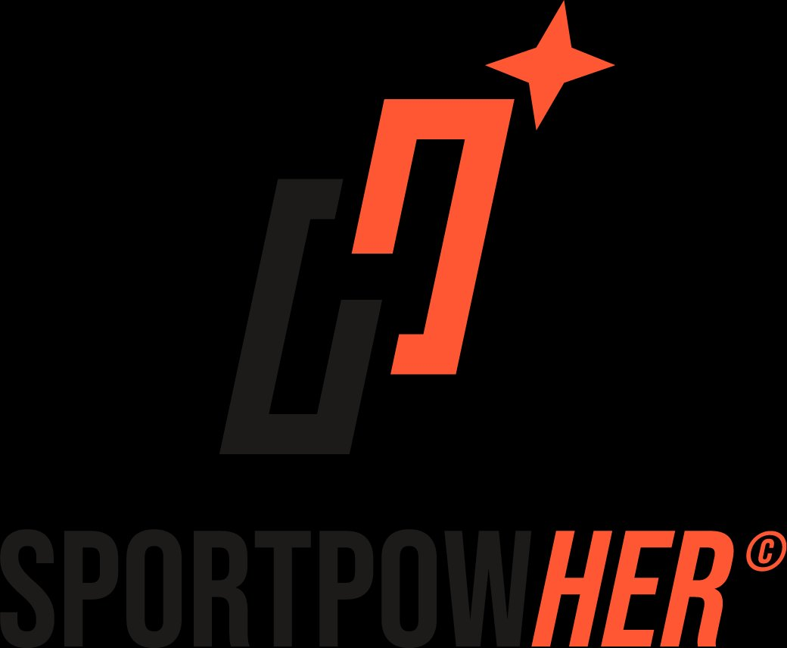
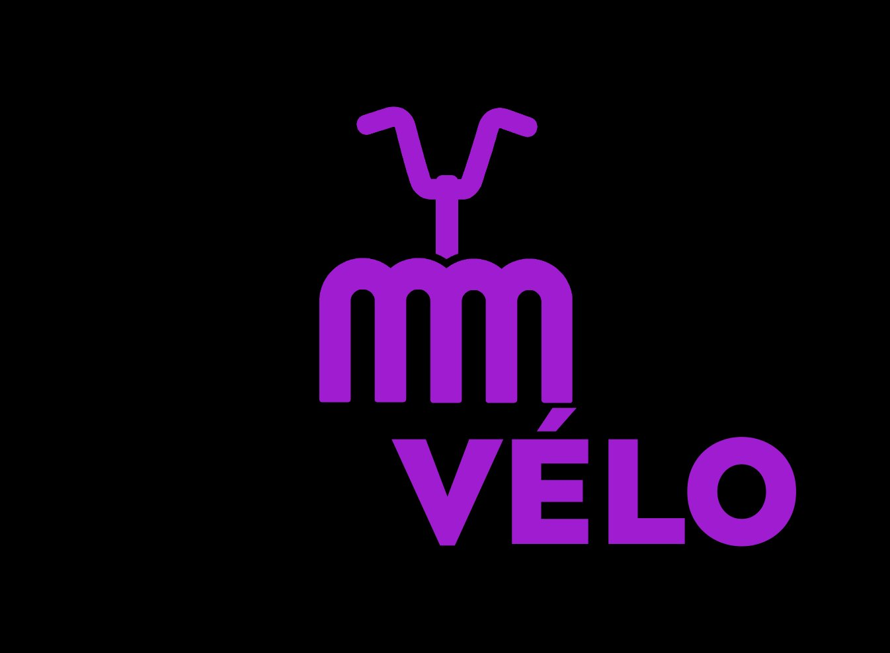

Track record
Des projets qui
ancrent l'expertise.

Marketing et communication pour cette start-up dédiée à la place des femmes dans le sport. Plusieurs jours par semaine, participation au capital. Mission de fond sur la durée.

Co-fondatrice et présidente de l'association. Construction d'une communauté, plaidoyer pour la féminisation du vélo en France. Mobilisation de partenaires et visibilité nationale.
Média spécialisé vélo urbain au féminin, lancé et développé depuis 2021. Expertise SEO construite sur la durée, communauté engagée, e-shop (fermé depuis). Socle de toute la légitimité terrain.
beyondmybike.com →Intervenante régulière en tables rondes, événements sectoriels et médias sur les enjeux de représentation et de féminisation dans le cyclisme.
Structure indépendante. Intervention en conseil, collaboration long terme ou mission ponctuelle. Plusieurs projets simultanés, avec une sélection rigoureuse des missions.